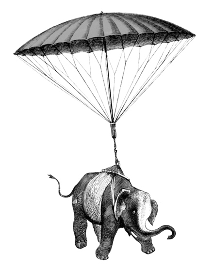

CONFIANCE
vs
estime
"Avant de vous diagnostiquer une dépression ou une faible estime de soi, assurez-vous d’abord que vous n’êtes pas en fait, juste entouré par des trous du cul." William Gibson
La confiance en soi peut se définir comme un sentiment éprouvé qui fait que l’on se fie à soi-même. Elle exprime un sentiment de sécurité et d’assurance par rapport à ses propres choix. Elle est en rapport avec les capacités d'un individu et non ses valeurs, ces dernières ayant une influence sur l'estime de soi. Cette confiance acquise n’est pas figée et se bonnifie au travers des diverses expériences traversées. Pour exemple, le chômage est un contexte social favorisant la diminution de la confiance et à l’inverse, l’entreprenariat augmente celle-ci.
Dans la baisse de confiance la notion de capacité, un ingrédient majeur, est souvent sous dosé. Cela implique alors un retrait de la personne, du stress, de l’anxiété, une mésestime et peut engendrer une certaine invalidité sociale et générer une souffrance profonde. Alors, des stratégies d’évitement se mettent en place et peuvent créer de l’isolement et de la résignation.
Psychopathologiquement, il se décrit la névrose d'échec ou conduite d'échec qui désigne un comportement de nature inconsciente face à une situation d'enjeux angoissante, qui conduit le sujet à une mise en faillite de ses propres désirs. Ces derniers peuvent avoir trait au contexte scolaire, professionnel, relationnel ou sentimental. Dans la névrose d'échec, le sujet organise sa vie de façon à ne pas parvenir à ses fins, en surestimant les risques ou s'imposant des conditions surnuméraires. Ses conséquences peuvent conduire à une intolérance totale et systématique au succès, dans le cas même de projets normalement réalisables, influançant dans la résultante, le ressenti d'une perte de confiance. La névrose d'échec met en jeu une forte culpabilité de l'individu. Ses causes seraient à rechercher dans une contrainte psychique de type "effet Golem" qui est un phénomène psychologique mettant en œuvre une prophétie autoréalisatrice dans laquelle des attentes moins élevées placées sur un individu le conduisent à de moins bonnes performances. C'est l'inverse de l'effet Pygmalion qui induit des performances supérieures d'un sujet sous l'effet d'une croyance extrinsèque en sa réussite.
Le fait d’accepter les échecs, les déceptions, d’accepter ses différences, son unicité, sa singularité renforcent le regard que l’on se porte. L’hypnose oriente la positivité de ce regard tourné vers soi et va faire ressortir le meilleur des expériences importantes de l’individu.
Comme l’écrivait Jules Renard dans son Journal : "une fois que ma décision est prise, j’hésite longuement… ". Qu'est ce que l'estime de soi ? Fondamentalement, il s'agit d'une opinion sur le type de personne que nous sommes. C'est un ensemble de pensées qui servent à déterminer qui nous sommes, c'est une opinion et non un fait. ce n'est aucunement la vérité, ce n'est rien qu'un jugement hautement subjectif.
L'estime de soi selon le psychologue et philosophe William JAMES (1890) repose sur le rapport entre nos réussites réelles et nos aspirations personnelles, c'est le ratio entre nos actualités et nos potentialités. Elle résulte ainsi du rapport entre les succès et les prétentions ou aspirations. C’est une évaluation résumée qui reflète le degré selon lequel la personne pense qu’elle réussit bien dans les domaines où elle aspire à exceller. L’estime de soi globale découle directement de la somme totale de ces évaluations succès/aspirations.
Dans la baisse de confiance la notion de capacité, un ingrédient majeur, est souvent sous dosé. Cela implique alors un retrait de la personne, du stress, de l’anxiété, une mésestime et peut engendrer une certaine invalidité sociale et générer une souffrance profonde. Alors, des stratégies d’évitement se mettent en place et peuvent créer de l’isolement et de la résignation.
Psychopathologiquement, il se décrit la névrose d'échec ou conduite d'échec qui désigne un comportement de nature inconsciente face à une situation d'enjeux angoissante, qui conduit le sujet à une mise en faillite de ses propres désirs. Ces derniers peuvent avoir trait au contexte scolaire, professionnel, relationnel ou sentimental. Dans la névrose d'échec, le sujet organise sa vie de façon à ne pas parvenir à ses fins, en surestimant les risques ou s'imposant des conditions surnuméraires. Ses conséquences peuvent conduire à une intolérance totale et systématique au succès, dans le cas même de projets normalement réalisables, influançant dans la résultante, le ressenti d'une perte de confiance. La névrose d'échec met en jeu une forte culpabilité de l'individu. Ses causes seraient à rechercher dans une contrainte psychique de type "effet Golem" qui est un phénomène psychologique mettant en œuvre une prophétie autoréalisatrice dans laquelle des attentes moins élevées placées sur un individu le conduisent à de moins bonnes performances. C'est l'inverse de l'effet Pygmalion qui induit des performances supérieures d'un sujet sous l'effet d'une croyance extrinsèque en sa réussite.
Le fait d’accepter les échecs, les déceptions, d’accepter ses différences, son unicité, sa singularité renforcent le regard que l’on se porte. L’hypnose oriente la positivité de ce regard tourné vers soi et va faire ressortir le meilleur des expériences importantes de l’individu.
Comme l’écrivait Jules Renard dans son Journal : "une fois que ma décision est prise, j’hésite longuement… ". Qu'est ce que l'estime de soi ? Fondamentalement, il s'agit d'une opinion sur le type de personne que nous sommes. C'est un ensemble de pensées qui servent à déterminer qui nous sommes, c'est une opinion et non un fait. ce n'est aucunement la vérité, ce n'est rien qu'un jugement hautement subjectif.
L'estime de soi selon le psychologue et philosophe William JAMES (1890) repose sur le rapport entre nos réussites réelles et nos aspirations personnelles, c'est le ratio entre nos actualités et nos potentialités. Elle résulte ainsi du rapport entre les succès et les prétentions ou aspirations. C’est une évaluation résumée qui reflète le degré selon lequel la personne pense qu’elle réussit bien dans les domaines où elle aspire à exceller. L’estime de soi globale découle directement de la somme totale de ces évaluations succès/aspirations.

Stanley COOPERSMITH (1967) a suggéré que l’estime de soi reflète l’évaluation de plusieurs aspects du soi, chacun étant mesuré en rapport avec les aspirations personnelles de l’individu, notamment le pouvoir, la signification, l’apparence ou encore la compétence. Ce sont, entre autre, les expériences et les influences des interactions vécues par un individu durant sa vie qui la développent. Des expériences positives peuvent favoriser un regard positif porté sur soi-même, et inversement. L'estime de soi ainsi est le résultat d'un rapport entre les succès et les prétentions dans les domaines importants de la vie. En d'autres termes, l'estime de soi est le rapport entre ce que sont réellement les humains et ce qu'ils veulent être (leur idéal de soi). et à une strate différente, elle peut être comprise comme étant l'écart subjectif ressenti chez un individu entre ce qu'il pense être et ce qu'il imagine ce que les gens croient de ce qu'il doit être.
C'est avant tout croire en sa valeur propre. L'estime de soi influence les pensées, les actions, les sentiments. Cest un auto jugement, une auto évaluation qui est fait en rapport avec ses propres valeurs. Lorsqu'un accomplissement est perçu comme valable, il y a valorisation de l'estime et lorsque l'évaluation des actions est ressentie en opposition aux valeurs intrinsèques, l'estime flanche.
Dans la hiérarchie des besoins de MASLOW ( se référer à la pyramde de MASLOW), l'estime de soi correspond à une double nécessité pour l'individu : se sentir compétent et être reconnu par autrui. L’estime de soi se manifeste par la fierté d’être soi et repose donc sur l’évaluation continue des actions et réalisations, que l'individu en ait conscience ou pas.
Plus précisément, le concept de soi est la composition de plusieurs éléments : l'image que l'on se porte dans le présent, l'image que l'on se porte au travers des souvenirs de nos expériences passées, l'idée de l'image que les autres ont de nous, l'image de la personne idéale que nous souhaitons devenir ou encore le type de personne auquel nous espérons ressembler à l'avenir. Puis se supplémentent les critères tels l'aspect physique, les relations, les valeurs, la vie affective, les biens matériels , etc. Cela implique que plus l'image perçue et l'image souhaitée se ressemblent ou fusionnent, plus l'estime personnelle sera haute.
C'est avant tout croire en sa valeur propre. L'estime de soi influence les pensées, les actions, les sentiments. Cest un auto jugement, une auto évaluation qui est fait en rapport avec ses propres valeurs. Lorsqu'un accomplissement est perçu comme valable, il y a valorisation de l'estime et lorsque l'évaluation des actions est ressentie en opposition aux valeurs intrinsèques, l'estime flanche.
Dans la hiérarchie des besoins de MASLOW ( se référer à la pyramde de MASLOW), l'estime de soi correspond à une double nécessité pour l'individu : se sentir compétent et être reconnu par autrui. L’estime de soi se manifeste par la fierté d’être soi et repose donc sur l’évaluation continue des actions et réalisations, que l'individu en ait conscience ou pas.
Plus précisément, le concept de soi est la composition de plusieurs éléments : l'image que l'on se porte dans le présent, l'image que l'on se porte au travers des souvenirs de nos expériences passées, l'idée de l'image que les autres ont de nous, l'image de la personne idéale que nous souhaitons devenir ou encore le type de personne auquel nous espérons ressembler à l'avenir. Puis se supplémentent les critères tels l'aspect physique, les relations, les valeurs, la vie affective, les biens matériels , etc. Cela implique que plus l'image perçue et l'image souhaitée se ressemblent ou fusionnent, plus l'estime personnelle sera haute.

EN RELATION

PROJET
OSER
AFFIRMATION
(in) CONFORT
MODELE
COMMUNIQUER